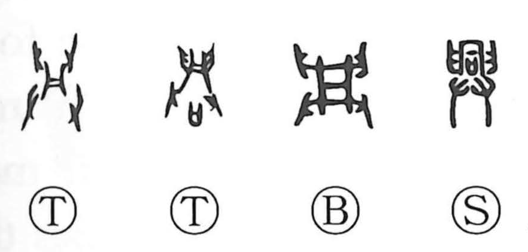

興

Kun: okoru, okosu, okonau, omomuki | On: ko, kyo
to rise ・ to raise ・ to arouse ・ to begin ・ to conduct ・ to prosper ・ interest
Explanation
In its earliest form, this character combines an element shaped like 同, depicting a liquor cup, with the two hands sign 廾, showing both hands holding and supporting the vessel as libation is poured. It pictures the rite of pouring wine onto the ground to alert and awaken the earth spirit, and, in solemn ceremonies, the paired acts of pouring and dance used to call the gods. From this image of rousing a deity to come forth, the meaning broadened to “to raise, to arouse,” then “to arise, to begin,” further to “to conduct (a rite or event),” and ultimately to “to prosper, flourish,” with an extended nuance of “interest, taste.”